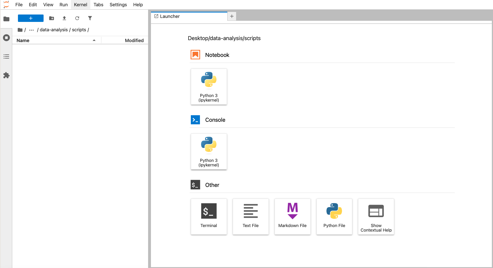
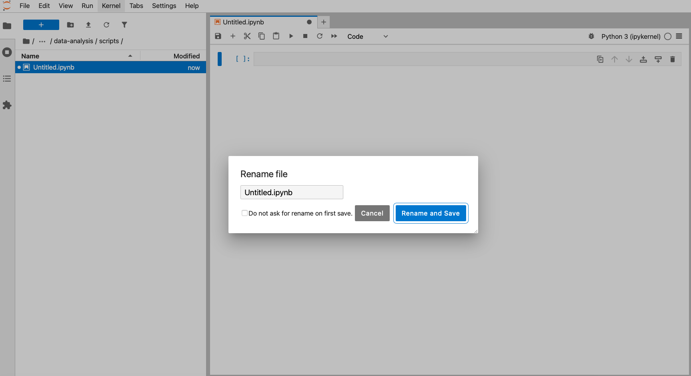
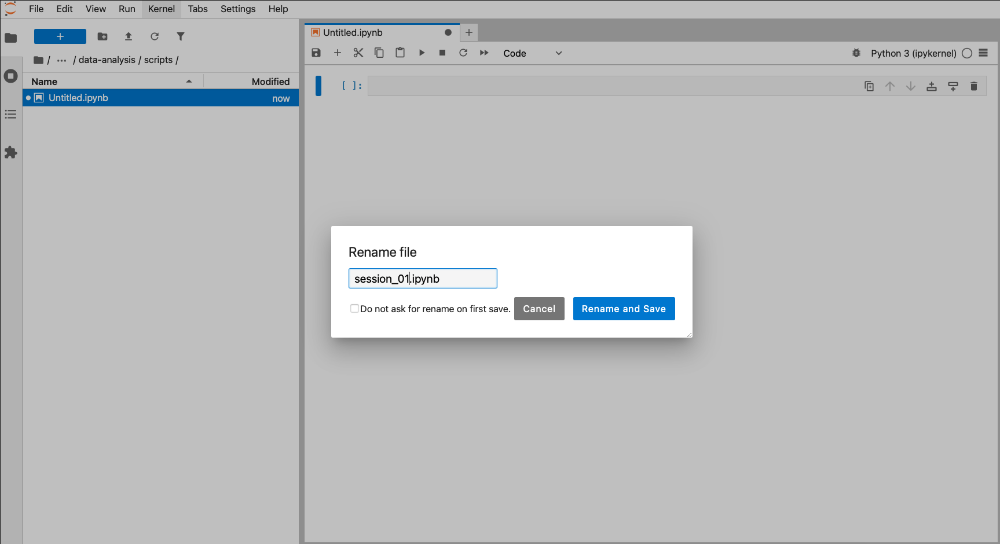
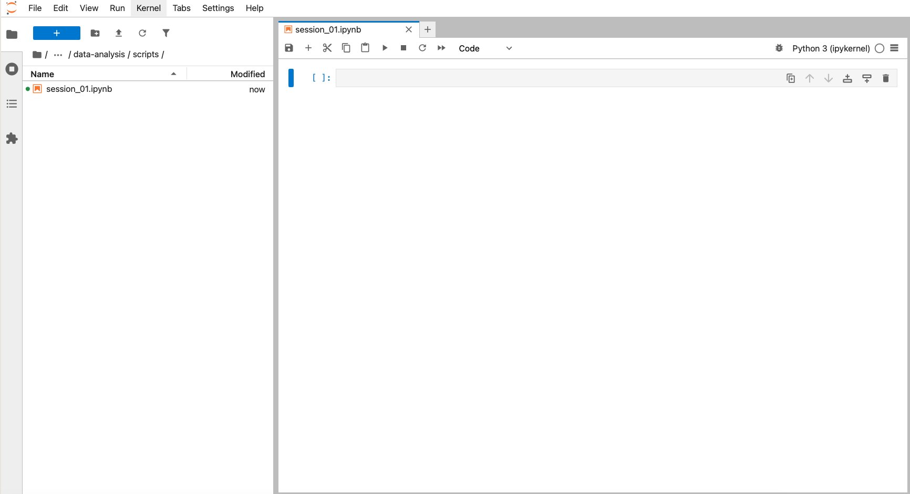

{kind=link}
{kind=link}
{kind=link}
{kind=link}
import os
print(os.getcwd())4 Intro to software
TipLearning objectives
- Get familiar with the programming language.
- Get to know the interface software.
4.1 Context
4.1.1 Why learn programming?
Simply put, programming allows you to move away from point-and-click activities. They might seem great because they’re intuitive and relatively easy - until you want to redo an analysis after collecting more data. You then need to manually go through the whole process again.
By writing out the different steps of your analysis you’re making all those ‘clicks’ explicit. The added benefit is that it forces you to think more about what steps you need to go through in your analysis, thereby making errors less likely!
This also very much improves the reproducibility of the analysis: after all, running the same code on the same data should also result in the same outcome. This is great when you’re sharing your analysis with colleagues, but also great for your future self. Your brilliant approach might have made sense at the time, but who knows how much you still recall a year later… More and more often funding bodies are (rightfully!) requiring you to include raw data and analysis pipelines when submitting a paper. So, you’ll be ahead of the game.
4.1.2 Interacting with the programming language
In this course we’re focusing on generic programming concepts, but we’re illustrating them in two different languages: R and Python.
In both cases we don’t directly type in commands in some kind of terminal window, but instead use an additional bit of software to make our programming experience a bit more user-friendly.
For R, the RStudio software is a very popular choice - and one we’ll be using here. It’s free, open-source and well-supported. What more can you ask for?
In the image above you can see that the window is divided into three main parts, each with various tabs. In clockwise order we have:
- Console / Terminal / Background jobs
- Environment / History / Connections / Tutorial
- Files / Plots / Packages / Help / Viewer / Presentation
In bold we’ve highlighted the tabs we’ll be using most.
In the Console we can directly run code - more on that soon. The Environment shows any information that is stored in R’s memory (empty in the figure above). The Files tab is a mini-browser; Plots shows you any plots that have been created and Help is where you can go for… well, help.
For Python, the JupyterLab software is a very popular choice - and one we’ll be using here. It’s free, open-source and well-supported. What more can you ask for?
4.2 Working directory
A good way of staying organised is to keep all the files related to a given project together. Using that concept when programming is really helpful, because it makes it easier for the computer to find all the data, scripts and other information related to an analysis.
We often refer to this as the working directory. This simply is the starting point for the computer to look for stuff.
Because you easily accumulate a lot of files when analysing data, it’s good to be organised. During this course we’ll create a project folder called data-analysis, which we’ll make our working directory.
Within this folder we’ll have sub folders that allow us to further organise our data. We’ll use the following structure:
| Folder | Description |
|---|---|
| data | Contains the data files we’ll use in this course, for example surveys.csv. For your own analysis you might want to consider adding another folder within this to contain the raw data. It’s good practice to always keep an untouched copy of your raw data. This helps with transparency and allows you analyse data differently in the future. Aim to keep your data cleaning and analyses programmatically. |
| images | This folder will contain any images you might produce, for example for publications or data exploration. |
| scripts | Here we can store any scripts we create. Here it’s also good to be structured and organised, something we cover a bit more in Section 4.4.1. |
| … | The opportunities are endless. You can add folders for documents, presentations, etc. How you do things matters less than being consistent! |
All the files in the working directory can be referenced using relative paths. This allows you to move you working directory across your computer - or to other computers - without breaking any of the links within your scripts.
ImportantRelative versus absolute paths
Relative paths are relative to a certain location on your computer. Absolute paths start from the absolute start of your hard drive. This is easiest illustrated with an example:
The advantage of using relative paths instead of absolute paths is that they still work if you move your analysis to another computer (or you send your analysis to a collaborator). This means that it greatly improves reproducibility of the code, since your code will still work on other people’s computers!
4.2.1 Creating a working directory
Before we start writing any code we’ll set up our working environment properly. To do this, we’ll create our data-analysis working directory, with all its sub folders.
The easiest way to set up a working directory in R is to create an R-project. This is simply a folder on your computer with a shortcut in it (ending in .RProj). When you double-click on the shortcut, it opens RStudio and sets the working directory to that particular folder.
To create an “R Project”:
- Start RStudio.
- Under the
Filemenu, click onNew Project. ChooseNew Directory, thenNew Project. - Enter a name for this new folder (or “directory”), and choose a convenient location for it. This will be your working directory for the rest of the day (e.g.,
~/data-analysis). - Click on
Create Project. - Tick
Open in new sessionto ensure RStudio starts afresh.
R will show you your current working directory in the Files pane. Alternatively, you can get it by typing in and running the getwd() command.
In Figure 4.2 we can see the file browser on the left and the Launcher window on the right. The file browser has a folder called data-analysis, with three subfolders: data, images and scripts.
To recreate this, launch JupyterLab by opening the terminal, activating your environment (mamba activate pycourse) and launching JupyterLab (jupyter lab).
Navigate to the folder you want to store your working directory (here we’ve put it under Desktop) and create a new folder called data-analysis. Within this folder you can create the necessary subfolders.
To check which folder is currently your working directory, run:
If it’s incorrect, then the easiest way of setting it correctly is to close JupyterLab, go to the terminal, navigate to the data-analysis folder and launch JupyterLab from there, e.g.
cd /Desktop/data-analysis
jupyter lab
Important
Complete setting up a working directory before proceeding.
4.3 Working with R or Python
The basis of programming is that we create or code instructions for the computer to follow. Next, we tell the computer to follow the instructions by executing or running those instructions.
4.3.1 Scripts versus console
There are two main ways of interacting with the language: by using the console or by using script files (plain text files that contain your code). The console is the place where commands can be typed and executed immediately by the computer. It is also where the results will be shown for commands that have been executed. However, no record is kept and any information is lost once the session is closed.
Instead, we uses scripts to write all the commands. That way there is a complete record of what we did, and anyone (including our future selves!) can easily replicate the results on their computer.
| Console/terminal | Script/Notebook |
|---|---|
| runs code directly | in essence, a text file |
| interactive | needs to be told to run |
| no record | records actions |
| difficult to trace progress | transparent workflow |
We can type commands directly in the Console pane and press EnterEnter.
RStudio also allows you to execute commands directly from the script editor by using the ControlControl + EnterEnter shortcut (on Macs, + will work, too). The command on the current line in the script (indicated by the cursor) or all of the commands in the currently selected text will be sent to the console and executed when you press ControlControl + EnterEnter. You can find other keyboard shortcuts in this RStudio cheatsheet about the RStudio IDE (PDF).
WarningThe R prompt
If R is ready to accept commands, the R console shows a > prompt. If it receives a command (by typing, copy-pasting or sent from the script editor using ControlControl + EnterEnter), R will try to execute it, and when ready, will show the results and come back with a new > prompt to wait for new commands.
If R is still waiting for you to enter more data because it isn’t complete yet, the console will show a + prompt. It means that you haven’t finished entering a complete command. This is because you have not ‘closed’ a parenthesis or quotation, i.e. you don’t have the same number of left-parentheses as right-parentheses, or the same number of opening and closing quotation marks. When this happens, and you thought you finished typing your command, click inside the console window and press EscapeEscape. This will cancel the incomplete command and return you to the > prompt.
We can open a Console from the Launcher window and directly type and execute code. We simply type the code and press ShiftShift + EnterEnter (or the “play” button in the top-left).
4.4 Running code
The simplest way of using a programming language is to use it interactively. We can do this by typing directly into the console / terminal.
For example, you can use R as a glorified calculator:
3 + 5[1] 812 / 7[1] 1.714286For example, you can use Python as a glorified calculator:
3 + 5812 / 71.7142857142857142Running code like this directly in the console is generally not a good idea, because then we can’t keep track of what we are doing. So, we first need to create a script to save our code in. Then, we can then play around. Let’s focus on that next.
Important
Complete creating a script before proceeding.
4.4.1 Splitting code
As your analysis grows, so does your code. So, often we want to split analyses into multiple scripts, for example:
01_preprocessingmay contain data cleaning steps02_explorationmay contain exploratory plots of your data03_analysiscould contain (statistical) analyses of your data04_figurescould contain code for figures, ready for publication
Each of these files could be hundreds of lines long. So, keeping track of your code makes sense. We can do that with code headings, which use the # heading ---- syntax. You can even add different heading levels, by increasing the number of # at the start.
This creates a little table of contents in the bottom-left corner of the script pane:
{kind=link}
Each of these files could be hundreds of lines long. So, keeping track of your code makes sense. We can do that with code headings, which use the markdown syntax. We won’t go into details on how markdown works (see here for basic syntax), but suffice for now is that you can even add different heading levels, by increasing the number of # at the start.
We define these by clicking on a cell, and changing the type from Code to Markdown (next to the fast-forward icon at the top).
This creates a table of contents, accessible in the TOC pane on the left:
{kind=link}
4.5 Functions and their arguments
Functions are “canned scripts” that automate more complicated sets of commands including operations assignments, etc. Many functions are predefined, or can be made available by importing packages (more on that later). A function usually takes one or more inputs called arguments. Functions often (but not always) return a value. A typical example would be the function sqrt(). The input (the argument) must be a number, and the return value (in fact, the output) is the square root of that number.
sqrt(9)The sqrt() function is not available by default, but is stored in the math module. Before we can use it, we need to load this module:
import mathNext, we can use the sqrt() function, specifying that it comes from the mathmodule. We separate the two with a full-stop (.):
math.sqrt(9)3.0Here, the value 9 is given to the sqrt() function. This function calculates the square root, and returns the value. This function is very simple, because it takes just one argument.
The return ‘value’ of a function need not be numerical (like that of sqrt()), and it also does not need to be a single item: it can be a set of things, or even a data set. We’ll see that when we read data files.
4.5.1 Arguments
Arguments allow you to control the behaviour of a function. They can be anything, not only numbers or file names. Exactly what each argument means differs per function and can be looked up in the documentation. Some functions take arguments which may either be specified by the user, or, if left out, take on a default value: these are called options.
Options are typically used to alter the way the function operates, such as if it should ignore missing values, or what symbol to use in a plot. However, if you want something specific, you can specify a value of your choice which will be used instead of the default.
Let’s try a function that can take multiple arguments: round().
round(3.14159)[1] 3round(3.14159)3Here, we’ve called round() with just one argument, 3.14159, and it has returned the value 3. That’s because the default is to round to the nearest whole number. If we want more digits we can see how to do that by getting information about the round() function.
We can use args(round) to find what arguments it takes, or look at the help for this function using ?round.
args(round)function (x, digits = 0, ...)
NULLWe see that if we want a different number of digits, we can type digits = 2 or however many we want. For example:
round(x = 3.14159, digits = 2)If you provide the arguments in the exact same order as they are defined you don’t have to name them:
round(3.14159, 2)And if you do name the arguments, you can switch their order:
round(digits = 2, x = 3.14159)
TipGetting help
You can have a more detailed look by checking the help page of the function. You can access any help page by typing help(function_name) or ?function_name. So, for the round function this would be help(round) or ?round.
We can use help(round) to find what arguments it takes.
help(round)We see that if we want a different number of digits, we can type ndigits = 2 or however many we want. For example:
round(3.14159, ndigits = 2)3.14If you provide the arguments in the exact same order as they are defined you don’t have to name them:
round(3.14159, 2)3.14Python still expects the arguments in the correct order, so this gives an error:
round(ndigits = 2, 3.14159)It’s good practice be explicit about the names of the arguments. That way you can avoid confusion later on when looking back at your code or when sharing your code.
4.6 Adding functionality using packages
Additional packages can be installed to extend the functionality of R. Most packages are available in a central repository called CRAN and can be installed from within R using the install.packages() function.
For example, to install (or update) the tidyverse package, you would run the following command on the console:
install.packages("tidyverse")Because the install process accesses the CRAN repository, you will need an Internet connection to install packages.
After this, you can then load the package to use it in your analysis. You load packages using the library() command (note the lack of quotation marks):
library(tidyverse)There are other repositories available. A very popular one is the Bioconductor project, which contains thousands of packages for bioinformatics applications. These use a different installation command, but the instructions are always given in each package’s page.
Additional packages can be installed to extend the functionality of Python. In the next section we’ll need some functionality from the numpy package, so we’ll install it here. We can do this directly from within JupyterLab:
!mamba install -c conda-forge numpy -yThis uses the mamba package manager to install numpy. It gets the information from the conda-forge channel and the -y simply auto-confirms the installation.
4.7 Exercises
4.7.1 Creating a working directory
4.7.2 Creating a script
ExerciseExercise 2 - Creating a script
Level:
Create a script and save it as 01_session in the scripts folder within your working directory.
AnswerAnswer
Go to File > New File > R Script in RStudio and save the script. Remember to add the .R extension.
In the Launcher window, click on Notebook, Python 3 and save the file (Save symbol at the top-left):





4.7.3 Running code
4.7.4 Functions
4.8 Summary
TipKey points
- We using a working directory as a starting point for our analysis
- Although we can run code interactively in the console, it’s best to create a script to run your code, so you can keep a record.
- Functions allows you to automate more complicated sets of commands and many are predefined.
- Functions often have arguments that allow you to control how the function behaves.
- We can add additional functionality to our programming language using packages.
- Packages need to be installed once and loaded every time we restart our session.
4.4.2 Comments in code
It’s always a good idea to add explanations to your code. We can do that with the hash tag
#symbol, for example:It’s always a good idea to add lots of comments to your code. What makes sense to you in that moment, might not a week later. Similarly, when sharing code with colleagues and collaborators, it’s always good to be as clear as possible.
Please complete the exercises to create a script and trial running code.